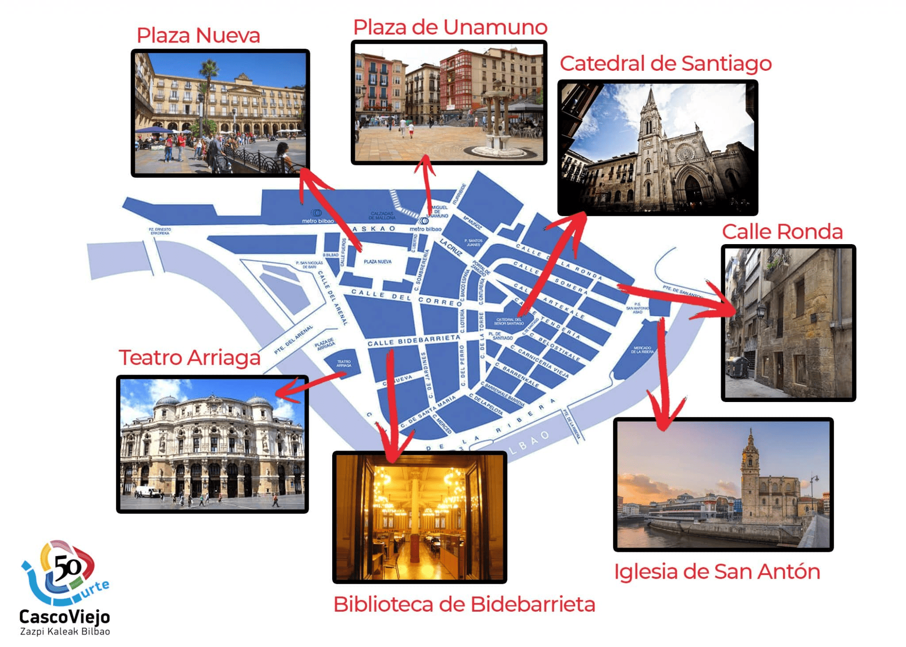
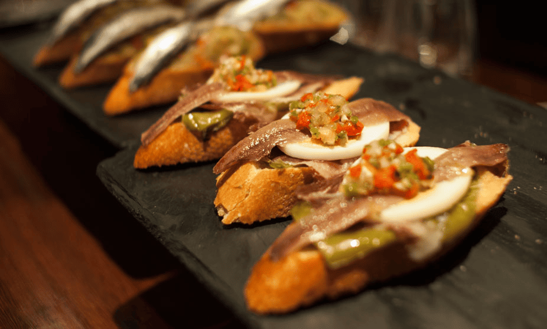

La ciudad del Guggenheim”, también podríamos llamar a este destino del País Vasco, ya que desde que se construyó este original museo en 1997, Bilbao se transformó para siempre. De hecho, ahora impacta por sus estructuras rompedoras creadas por prestigiosos arquitectos y es toda una referencia internacional de modernidad.
Lugares que puedes visitar
Pistas gastronómicas para conocer la ciudad
Bilbao brilla también en lo gastronómico y ¡lo sabe! Las siete calles del Casco Viejo y su Plaza Nueva, la calle Licenciado Poza de Indautxu, los Jardines de Albia, en El Ensanche… Muchas son las rutas posibles para “ir de potes”, el equivalente a salir a tomar un aperitivo de mañana, tarde o noche. Aunque existen visitas guiadas que combinan degustación de pintxos y museos.

El significado cultural del pintxo
La elaboración de un pintxo es un ejercicio de creatividad tan amplio como las combinaciones de ingredientes conocidas y por conocer, por tanto, infinito. Estos pequeños aperitivos son prácticamente una seña de identidad para los bilbaínos. Ir “descubriendo” sabores de bar en bar es una apetecible aventura culinaria. A diferencia de otras zonas de España, en Euskadi el pintxo no se considera una tapa gratuita y se paga aparte. Así, cada establecimiento busca siempre esa mezcla de productos estrella que logre marcar tendencia en la ciudad o bien fidelizar a los clientes habituales. Imaginación, pasión por la gastronomía y, por supuesto, buena materia prima son fundamentales para alcanzar esa excelencia.

Un paseo de contrastes
La visita a esta ciudad del norte de España puede empezar por el Museo Guggenheim. Es uno de los ejemplos más sorprendentes de la arquitectura del siglo XX, ya que Frank Gehry utilizó 33.000 finísimas planchas de titanio para crear sus curiosas formas curvas.
En su interior, comparte con Nueva York y Venecia la más importante colección privada de arte moderno y contemporáneo del mundo. Además, Bilbao cuenta con otra de las mejores pinacotecas de España: el Museo de Bellas Artes.A la apuesta por una imagen rompedora e imaginativa se unen el Palacio Euskalduna, las estaciones de metro de Norman Foster, las torres de Isozaki y Pelli, el puente Zubizuri de Calatrava o nuevos centros culturales como la Alhóndiga de Philippe Starck, construida a partir de un antiguo almacén de vinos.
Por otro lado, Bilbao no puede concebirse sin su característico casco antiguo con más de 700 años de historia. Da gusto caminar por las conocidas como “Siete Calles” e ir encontrando edificios emblemáticos como la Catedral o su teatro más elegante inspirado en la Ópera de París, el Arriaga, así como una mezcla de tiendas y cafeterías que van de lo más tradicional a lo más cool.